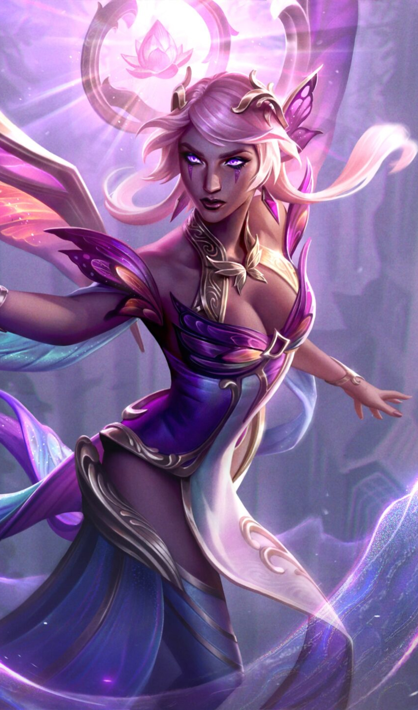

Find your League of Legends ranked statistics over the years wrapped in one!
Many League of Legends players look toward competitive ranked play as the focal point of the game. Ranked queues are the heart and soul of League,
and have constantly been at the game’s forefront when it comes to the way it’s balanced and the way the player base perceives it.
Each season, for about 11 months out of the year, League players grind tirelessly toward the apex of the ranked ladder. With nine ranks to surpass,
the ultimate goal of reaching the Challenger tier and cementing your place among the best of the best is a possibility for everyone who plays League.
